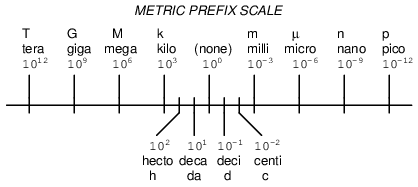
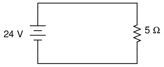
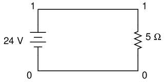
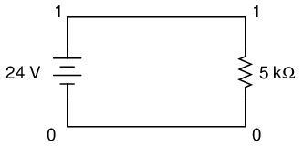

In many disciplines of science and engineering, very large and very small numerical quantities must be managed. Some of these quantities are mind-boggling in their size, either extremely small or extremely large. Take for example the mass of a proton, one of the constituent particles of an atom's nucleus:
Proton mass = 0.00000000000000000000000167 grams
Or, consider the number of electrons passing by a point in a circuit every second with a steady electric current of 1 amp:
1 amp = 6,250,000,000,000,000,000 electrons per second
A lot of zeros, isn't it? Obviously, it can get quite confusing to have to handle so many zero digits in numbers such as this, even with the help of calculators and computers.
Take note of those two numbers and of the relative sparsity of non-zero digits in them. For the mass of the proton, all we have is a "167" preceded by 23 zeros before the decimal point. For the number of electrons per second in 1 amp, we have "625" followed by 16 zeros. We call the span of non-zero digits (from first to last), plus any zero digits not merely used for placeholding, the "significant digits" of any number.
The significant digits in a real-world measurement are typically reflective of the accuracy of that measurement. For example, if we were to say that a car weighs 3,000 pounds, we probably don't mean that the car in question weighs exactly 3,000 pounds, but that we've rounded its weight to a value more convenient to say and remember. That rounded figure of 3,000 has only one significant digit: the "3" in front -- the zeros merely serve as placeholders. However, if we were to say that the car weighed 3,005 pounds, the fact that the weight is not rounded to the nearest thousand pounds tells us that the two zeros in the middle aren't just placeholders, but that all four digits of the number "3,005" are significant to its representative accuracy. Thus, the number "3,005" is said to have four significant figures.
In like manner, numbers with many zero digits are not necessarily representative of a real-world quantity all the way to the decimal point. When this is known to be the case, such a number can be written in a kind of mathematical "shorthand" to make it easier to deal with. This "shorthand" is called scientific notation.
With scientific notation, a number is written by representing its significant digits as a quantity between 1 and 10 (or -1 and -10, for negative numbers), and the "placeholder" zeros are accounted for by a power-of-ten multiplier. For example:
1 amp = 6,250,000,000,000,000,000 electrons per second
. . . can be expressed as . . .
1 amp = 6.25 x 1018 electrons per second
10 to the 18th power (1018) means 10 multiplied by itself 18 times, or a "1" followed by 18 zeros. Multiplied by 6.25, it looks like "625" followed by 16 zeros (take 6.25 and skip the decimal point 18 places to the right). The advantages of scientific notation are obvious: the number isn't as unwieldy when written on paper, and the significant digits are plain to identify.
But what about very small numbers, like the mass of the proton in grams? We can still use scientific notation, except with a negative power-of-ten instead of a positive one, to shift the decimal point to the left instead of to the right:
Proton mass = 0.00000000000000000000000167 grams
. . . can be expressed as . . .
Proton mass = 1.67 x 10-24 grams
10 to the -24th power (10-24) means the inverse (1/x) of 10 multiplied by itself 24 times, or a "1" preceded by a decimal point and 23 zeros. Multiplied by 1.67, it looks like "167" preceded by a decimal point and 23 zeros. Just as in the case with the very large number, it is a lot easier for a human being to deal with this "shorthand" notation. As with the prior case, the significant digits in this quantity are clearly expressed.
Because the significant digits are represented "on their own," away from the power-of-ten multiplier, it is easy to show a level of precision even when the number looks round. Taking our 3,000 pound car example, we could express the rounded number of 3,000 in scientific notation as such:
car weight = 3 x 103 pounds
If the car actually weighed 3,005 pounds (accurate to the nearest pound) and we wanted to be able to express that full accuracy of measurement, the scientific notation figure could be written like this:
car weight = 3.005 x 103 pounds
However, what if the car actually did weigh 3,000 pounds, exactly (to the nearest pound)? If we were to write its weight in "normal" form (3,000 lbs), it wouldn't necessarily be clear that this number was indeed accurate to the nearest pound and not just rounded to the nearest thousand pounds, or to the nearest hundred pounds, or to the nearest ten pounds. Scientific notation, on the other hand, allows us to show that all four digits are significant with no misunderstanding:
car weight = 3.000 x 103 pounds
Since there would be no point in adding extra zeros to the right of the decimal point (placeholding zeros being unnecessary with scientific notation), we know those zeros must be significant to the precision of the figure.
The benefits of scientific notation do not end with ease of writing and expression of accuracy. Such notation also lends itself well to mathematical problems of multiplication and division. Let's say we wanted to know how many electrons would flow past a point in a circuit carrying 1 amp of electric current in 25 seconds. If we know the number of electrons per second in the circuit (which we do), then all we need to do is multiply that quantity by the number of seconds (25) to arrive at an answer of total electrons:
(6,250,000,000,000,000,000 electrons per second) x (25 seconds) =
156,250,000,000,000,000,000 electrons passing by in 25 seconds
Using scientific notation, we can write the problem like this:
(6.25 x 1018 electrons per second) x (25 seconds)
If we take the "6.25" and multiply it by 25, we get 156.25. So, the answer could be written as:
156.25 x 1018 electrons
However, if we want to hold to standard convention for scientific notation, we must represent the significant digits as a number between 1 and 10. In this case, we'd say "1.5625" multiplied by some power-of-ten. To obtain 1.5625 from 156.25, we have to skip the decimal point two places to the left. To compensate for this without changing the value of the number, we have to raise our power by two notches (10 to the 20th power instead of 10 to the 18th):
1.5625 x 1020 electrons
What if we wanted to see how many electrons would pass by in 3,600 seconds (1 hour)? To make our job easier, we could put the time in scientific notation as well:
(6.25 x 1018 electrons per second) x (3.6 x 103 seconds)
To multiply, we must take the two significant sets of digits (6.25 and 3.6) and multiply them together; and we need to take the two powers-of-ten and multiply them together. Taking 6.25 times 3.6, we get 22.5. Taking 1018 times 103, we get 1021 (exponents with common base numbers add). So, the answer is:
22.5 x 1021 electrons
. . . or more properly . . .
2.25 x 1022 electrons
To illustrate how division works with scientific notation, we could figure that last problem "backwards" to find out how long it would take for that many electrons to pass by at a current of 1 amp:
(2.25 x 1022 electrons) / (6.25 x 1018 electrons per second)
Just as in multiplication, we can handle the significant digits and powers-of-ten in separate steps (remember that you subtract the exponents of divided powers-of-ten):
(2.25 / 6.25) x (1022 / 1018)
And the answer is: 0.36 x 104, or 3.6 x 103, seconds. You can see that we arrived at the same quantity of time (3600 seconds). Now, you may be wondering what the point of all this is when we have electronic calculators that can handle the math automatically. Well, back in the days of scientists and engineers using "slide rule" analog computers, these techniques were indispensable. The "hard" arithmetic (dealing with the significant digit figures) would be performed with the slide rule while the powers-of-ten could be figured without any help at all, being nothing more than simple addition and subtraction.
The metric system, besides being a collection of measurement units for all sorts of physical quantities, is structured around the concept of scientific notation. The primary difference is that the powers-of-ten are represented with alphabetical prefixes instead of by literal powers-of-ten. The following number line shows some of the more common prefixes and their respective powers-of-ten:

Looking at this scale, we can see that 2.5 Gigabytes would mean 2.5 x 109 bytes, or 2.5 billion bytes. Likewise, 3.21 picoamps would mean 3.21 x 10-12 amps, or 3.21 1/trillionths of an amp.
Other metric prefixes exist to symbolize powers of ten for extremely small and extremely large multipliers. On the extremely small end of the spectrum, femto (f) = 10-15, atto (a) = 10-18, zepto (z) = 10-21, and yocto (y) = 10-24. On the extremely large end of the spectrum, Peta (P) = 1015, Exa (E) = 1018, Zetta (Z) = 1021, and Yotta (Y) = 1024.
Because the major prefixes in the metric system refer to powers of 10 that are multiples of 3 (from "kilo" on up, and from "milli" on down), metric notation differs from regular scientific notation in that the mantissa can be anywhere between 1 and 999, depending on which prefix is chosen. For example, if a laboratory sample weighs 0.000267 grams, scientific notation and metric notation would express it differently:
2.67 x 10-4 grams (scientific notation)
267 µgrams (metric notation)
The same figure may also be expressed as 0.267 milligrams (0.267 mg), although it is usually more common to see the significant digits represented as a figure greater than 1.
In recent years a new style of metric notation for electric quantities has emerged which seeks to avoid the use of the decimal point. Since decimal points (".") are easily misread and/or "lost" due to poor print quality, quantities such as 4.7 k may be mistaken for 47 k. The new notation replaces the decimal point with the metric prefix character, so that "4.7 k" is printed instead as "4k7". Our last figure from the prior example, "0.267 m", would be expressed in the new notation as "0m267".
To express a quantity in a different metric prefix that what it was originally given, all we need to do is skip the decimal point to the right or to the left as needed. Notice that the metric prefix "number line" in the previous section was laid out from larger to smaller, left to right. This layout was purposely chosen to make it easier to remember which direction you need to skip the decimal point for any given conversion.
Example problem: express 0.000023 amps in terms of microamps.
0.000023 amps (has no prefix, just plain unit of amps)
From UNITS to micro on the number line is 6 places (powers of ten) to the right, so we need to skip the decimal point 6 places to the right:
0.000023 amps = 23. , or 23 microamps (µA)
Example problem: express 304,212 volts in terms of kilovolts.
304,212 volts (has no prefix, just plain unit of volts)
From the (none) place to kilo place on the number line is 3 places (powers of ten) to the left, so we need to skip the decimal point 3 places to the left:
304,212. = 304.212 kilovolts (kV)
Example problem: express 50.3 Mega-ohms in terms of milli-ohms.
50.3 M ohms (mega = 106)
From mega to milli is 9 places (powers of ten) to the right (from 10 to the 6th power to 10 to the -3rd power), so we need to skip the decimal point 9 places to the right:
50.3 M ohms = 50,300,000,000 milli-ohms (mΩ)
To enter numbers in scientific notation into a hand calculator, there is usually a button marked "E" or "EE" used to enter the correct power of ten. For example, to enter the mass of a proton in grams (1.67 x 10-24 grams) into a hand calculator, I would enter the following keystrokes:
[1] [.] [6] [7] [EE] [2] [4] [+/-]
The [+/-] keystroke changes the sign of the power (24) into a -24. Some calculators allow the use of the subtraction key [-] to do this, but I prefer the "change sign" [+/-] key because its more consistent with the use of that key in other contexts.
If I wanted to enter a negative number in scientific notation into a hand calculator, I would have to be careful how I used the [+/-] key, lest I change the sign of the power and not the significant digit value. Pay attention to this example:
Number to be entered: -3.221 x 10-15:
[3] [.] [2] [2] [1] [+/-] [EE] [1] [5] [+/-]
The first [+/-] keystroke changes the entry from 3.221 to -3.221; the second [+/-] keystroke changes the power from 15 to -15.
Displaying metric and scientific notation on a hand calculator is a different matter. It involves changing the display option from the normal "fixed" decimal point mode to the "scientific" or "engineering" mode. Your calculator manual will tell you how to set each display mode.
These display modes tell the calculator how to represent any number on the numerical readout. The actual value of the number is not affected in any way by the choice of display modes -- only how the number appears to the calculator user. Likewise, the procedure for entering numbers into the calculator does not change with different display modes either. Powers of ten are usually represented by a pair of digits in the upper-right hand corner of the display, and are visible only in the "scientific" and "engineering" modes.
The difference between "scientific" and "engineering" display modes is the difference between scientific and metric notation. In "scientific" mode, the power-of-ten display is set so that the main number on the display is always a value between 1 and 10 (or -1 and -10 for negative numbers). In "engineering" mode, the powers-of-ten are set to display in multiples of 3, to represent the major metric prefixes. All the user has to do is memorize a few prefix/power combinations, and his or her calculator will be "speaking" metric!
POWER METRIC PREFIX ----- ------------- 12 ......... Tera (T) 9 .......... Giga (G) 6 .......... Mega (M) 3 .......... Kilo (k) 0 .......... UNITS (plain) -3 ......... milli (m) -6 ......... micro (u) -9 ......... nano (n) -12 ........ pico (p)
The SPICE circuit simulation computer program uses scientific notation to display its output information, and can interpret both scientific notation and metric prefixes in the circuit description files. If you are going to be able to successfully interpret the SPICE analyses throughout this book, you must be able to understand the notation used to express variables of voltage, current, etc. in the program.
Let's start with a very simple circuit composed of one voltage source (a battery) and one resistor:

To simulate this circuit using SPICE, we first have to designate node numbers for all the distinct points in the circuit, then list the components along with their respective node numbers so the computer knows which component is connected to which, and how. For a circuit of this simplicity, the use of SPICE seems like overkill, but it serves the purpose of demonstrating practical use of scientific notation:

Typing out a circuit description file, or netlist, for this circuit, we get this:
simple circuit v1 1 0 dc 24 r1 1 0 5 .end
The line "v1 1 0 dc 24" describes the battery, positioned between nodes 1 and 0, with a DC voltage of 24 volts. The line "r1 1 0 5" describes the 5 Ω resistor placed between nodes 1 and 0.
Using a computer to run a SPICE analysis on this circuit description file, we get the following results:
node voltage ( 1) 24.0000
voltage source currents name current v1 -4.800E+00 total power dissipation 1.15E+02 watts
SPICE tells us that the voltage "at" node number 1 (actually, this means the voltage between nodes 1 and 0, node 0 being the default reference point for all voltage measurements) is equal to 24 volts. The current through battery "v1" is displayed as -4.800E+00 amps. This is SPICE's method of denoting scientific notation. What its really saying is "-4.800 x 100 amps," or simply -4.800 amps. The negative value for current here is due to a quirk in SPICE and does not indicate anything significant about the circuit itself. The "total power dissipation" is given to us as 1.15E+02 watts, which means "1.15 x 102 watts," or 115 watts.
Let's modify our example circuit so that it has a 5 kΩ (5 kilo-ohm, or 5,000 ohm) resistor instead of a 5 Ω resistor and see what happens.

Once again is our circuit description file, or "netlist:"
simple circuit v1 1 0 dc 24 r1 1 0 5k .end
The letter "k" following the number 5 on the resistor's line tells SPICE that it is a figure of 5 kΩ, not 5 Ω. Let's see what result we get when we run this through the computer:
node voltage ( 1) 24.0000
voltage source currents name current v1 -4.800E-03 total power dissipation 1.15E-01 watts
The battery voltage, of course, hasn't changed since the first simulation: its still at 24 volts. The circuit current, on the other hand, is much less this time because we've made the resistor a larger value, making it more difficult for electrons to flow. SPICE tells us that the current this time is equal to -4.800E-03 amps, or -4.800 x 10-3 amps. This is equivalent to taking the number -4.8 and skipping the decimal point three places to the left.
Of course, if we recognize that 10-3 is the same as the metric prefix "milli," we could write the figure as -4.8 milliamps, or -4.8 mA.
Looking at the "total power dissipation" given to us by SPICE on this second simulation, we see that it is 1.15E-01 watts, or 1.15 x 10-1 watts. The power of -1 corresponds to the metric prefix "deci," but generally we limit our use of metric prefixes in electronics to those associated with powers of ten that are multiples of three (ten to the power of . . . -12, -9, -6, -3, 3, 6, 9, 12, etc.). So, if we want to follow this convention, we must express this power dissipation figure as 0.115 watts or 115 milliwatts (115 mW) rather than 1.15 deciwatts (1.15 dW).
Perhaps the easiest way to convert a figure from scientific notation to common metric prefixes is with a scientific calculator set to the "engineering" or "metric" display mode. Just set the calculator for that display mode, type any scientific notation figure into it using the proper keystrokes (see your owner's manual), press the "equals" or "enter" key, and it should display the same figure in engineering/metric notation.
Again, I'll be using SPICE as a method of demonstrating circuit concepts throughout this book. Consequently, it is in your best interest to understand scientific notation so you can easily comprehend its output data format.
Contributors to this chapter are listed in chronological order of their contributions, from most recent to first. See Appendix 2 (Contributor List) for dates and contact information.
Jason Starck (June 2000): HTML document formatting, which led to a much better-looking second edition.
Lessons In Electric Circuits copyright (C) 2000-2023 Tony R. Kuphaldt, under the terms and conditions of the CC BY License.